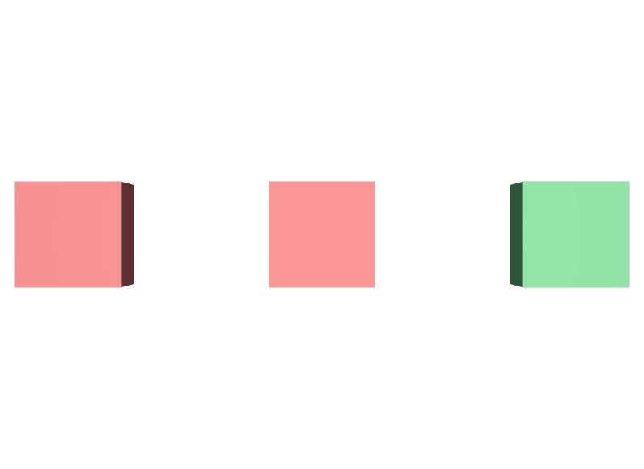

Internalのつもりでファイル名を書く
@self.usda@</World/Master>のように自分のファイル名を明示すると、Externalとして扱われます。読み込みの経路が変わるため、Internalにしたいならファイル名は書きません。
STEP 66 · COMPOSITION
同じファイルの中を指すか、別のファイルを指すかの違いです
今日これだけ
公式情報に基づく説明
STEP 57 ReferencesのようなComposition Arcは、別のファイルを指すことも、同じファイルの中の別のPrimを指すこともできます。前者をExternal Arc、後者をInternal Arcと呼びます。書き方の違いは一点だけで、@ファイル名@を書けばExternal、</Path>だけを書けばInternalです。合成の規則はどちらも同じです。
USDA
#usda 1.0
(
defaultPrim = "Part"
metersPerUnit = 1
upAxis = "Y"
)
def Xform "Part"
{
def Cube "Body"
{
double size = 1
color3f[] primvars:displayColor = [(0.2, 0.7, 0.3)]
}
}緑の箱を持つ、独立したファイルです。defaultPrim = "Part"を書いてあるので、外から参照するときにPathを省略できます。
USDA
def Xform "World"
{
def Xform "Master"
{
def Cube "Body"
{
double size = 1
color3f[] primvars:displayColor = [(0.85, 0.2, 0.2)]
}
double3 xformOp:translate = (-2.4, 0, 0)
uniform token[] xformOpOrder = ["xformOp:translate"]
}
def Xform "CopyInternal" (
references = </World/Master>
)
{
double3 xformOp:translate = (0, 0, 0)
uniform token[] xformOpOrder = ["xformOp:translate"]
}
def Xform "CopyExternal" (
references = @shared-part.usda@
)
{
double3 xformOp:translate = (2.4, 0, 0)
uniform token[] xformOpOrder = ["xformOp:translate"]
}
}CopyInternalは同じファイルの/World/Masterを指しています。ファイル名は書きません。CopyExternalは@shared-part.usda@というファイルを指しています。Pathを書いていないので、そのファイルのSTEP 61 Default Primが使われます。
結果

Master、中央がCopyInternalで、同じファイルのMasterを取り込んだので赤です。右のCopyExternalは外部ファイルの緑を取り込んでいます。examples/lesson-29/arcs.usda / Apple USD Tools 0.25.2 のusdrecord（Hydra Storm・Metal）/ macOS 26.5.2・Apple M4走査すると、どちらのコピーにもBodyが現れていることが分かります。
['/World', '/World/Master', '/World/Master/Body',
'/World/CopyInternal', '/World/CopyInternal/Body',
'/World/CopyExternal', '/World/CopyExternal/Body',
'/World/ShotCam']確かめる
from pxr import Pcp, Usd
stage = Usd.Stage.Open("arcs.usda")
for path in ("/World/CopyInternal", "/World/CopyExternal"):
query = Usd.PrimCompositionQuery(stage.GetPrimAtPath(path))
for arc in query.GetCompositionArcs():
if arc.GetArcType() == Pcp.ArcTypeRoot:
continue
node = arc.GetTargetNode()
layer = node.layerStack.identifier.rootLayer.GetDisplayName()
print(path, arc.GetArcType(), "->", layer, node.path)
# /World/CopyInternal Pcp.ArcTypeReference -> arcs.usda /World/Master
# /World/CopyExternal Pcp.ArcTypeReference -> shared-part.usda /PartどちらもPcp.ArcTypeReferenceです。違うのは行き先のLayerだけで、CopyInternalは自分と同じarcs.usdaを、CopyExternalはshared-part.usdaを指しています。これがInternalとExternalの実体です。
Diagram
3つ目のように、ファイル名とPathを続けて書くこともできます。この場合は、そのファイルのDefault Primではなく、指定したPathが取り込まれます。
Python
from pxr import Sdf, Usd, UsdGeom
stage = Usd.Stage.CreateNew("arcs.usda")
UsdGeom.Xform.Define(stage, "/World")
UsdGeom.Xform.Define(stage, "/World/Master")
internal = UsdGeom.Xform.Define(stage, "/World/CopyInternal")
internal.GetPrim().GetReferences().AddInternalReference(Sdf.Path("/World/Master"))
external = UsdGeom.Xform.Define(stage, "/World/CopyExternal")
external.GetPrim().GetReferences().AddReference("shared-part.usda")
stage.Save()Internalには専用のAddInternalReferenceがあり、Pathだけを渡します。ExternalはAddReferenceにファイル名を渡します。AddReference("shared-part.usda", "/Part")のように第2引数へPathを渡すと、Default Prim以外を指定できます。
USDA → Python mapping
USDA
references = </World/Master>↓Python
prim.GetReferences().AddInternalReference(Sdf.Path("/World/Master"))USDA
references = @shared-part.usda@↓Python
prim.GetReferences().AddReference("shared-part.usda")USDA
references = @shared-part.usda@</Part>↓Python
prim.GetReferences().AddReference("shared-part.usda", "/Part")Beginner notes
よくある間違い
@self.usda@</World/Master>のように自分のファイル名を明示すると、Externalとして扱われます。読み込みの経路が変わるため、Internalにしたいならファイル名は書きません。
Pathを省略できるのは、指し先のファイルにdefaultPrimがあるときだけです。無い場合はPathまで書きます。
@shared-part.usda@のような相対パスは、それを書いているファイルの場所を基準に解決されます。Stageのルートではありません。
Internal Referenceでも構造は展開されます。同じものを大量に並べるなら、STEP 94 Instancingを検討します。
Glossary
Pcp.ArcType…で表される。Official references
確認日: